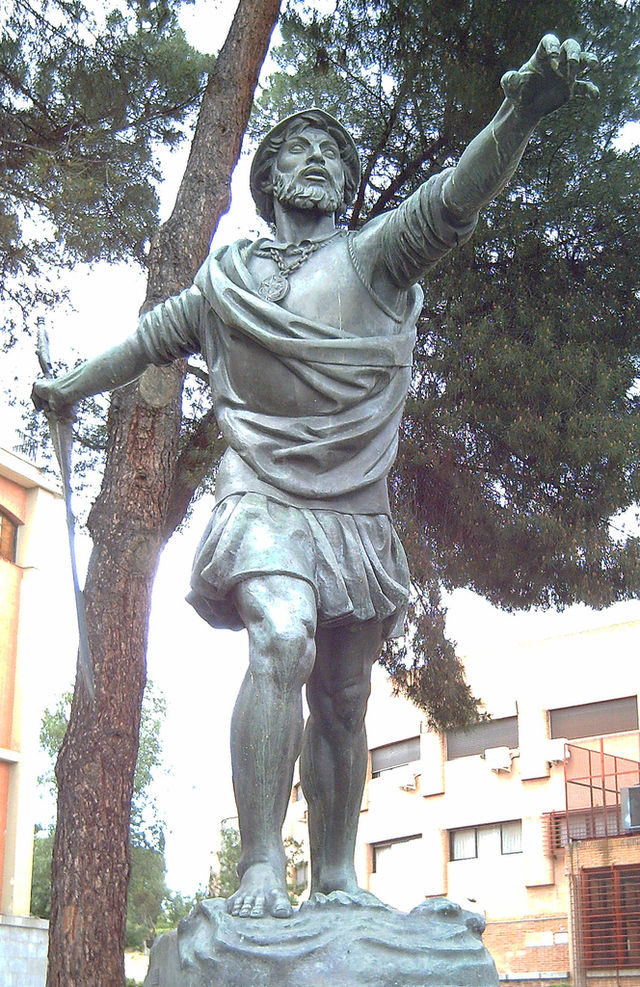
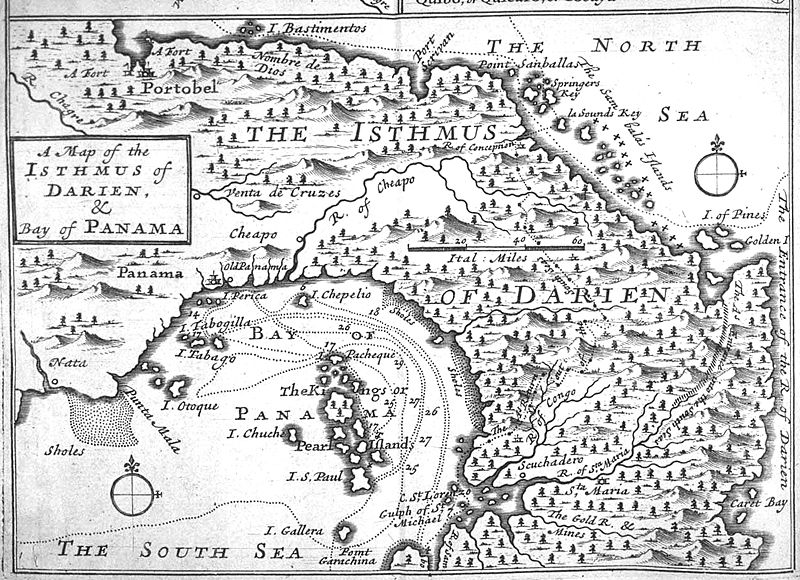

Carlos HTML© 2015 Privacy policy
Inicio
Núñez de Balboa quedó a partir de entonces con el mando absoluto de Santa María y de Veragua. Una de sus primeras
acciones fue juzgar al bachiller Fernández de Enciso por el delito de usurpación de autoridad; fue condenado a la cárcel y sus bienes fueron
confiscados, aunque posteriormente Balboa lo dejó en libertad a cambio de que se volviera a La Española y después a España. En el mismo barco
fueron dos representantes de Núñez de Balboa, con la misión de dar la versión de Balboa de los sucesos de la colonia y de pedir más hombres y
suministros para proseguir con la conquista de Veragua.
Conquista
Mientras, Núñez de Balboa comenzó a mostrar su faceta de conquistador embarcándose
al oeste y recorriendo el istmo de Panamá, sometiendo a varias tribus indígenas y forjando alianzas con otras, como las de los caciques Coíba,
Careta y Poncha.14 Atravesó ríos, montañas y pantanos malsanos en busca de oro y esclavos. En una carta enviada al rey de España expresó que:
«He ido adelante por guía y aun abriendo los caminos por mi mano». También pudo aplacar revueltas de varios españoles que desafiaban su
autoridad. Logró la siembra del maíz y recibió provisiones de La Española y de España. Hizo que sus soldados se habituaran a la vida de
exploradores de tierras coloniales. Núñez de Balboa logró recoger mucho oro, en parte de los adornos de las mujeres indígenas y el resto
obtenido por formas violentas.
Carta al rey
En 1513, escribió una extensa carta al rey de España en la que le solicitaba más hombres aclimatados en La
Española, armas, provisiones, carpinteros para construir buques y los materiales necesarios para levantar un astillero. En 1515, en otra carta
hablaba de su política humanitaria para con los indígenas y aconsejaba al mismo tiempo, que las tribus caníbales o temidas fueran castigadas
con severidad extrema. A finales de 1512 e inicios de 1513, llegó a una comarca donde dominaba el cacique Careta.
Careta
Careta fue derrotado
fácilmente y luego se hizo amigo de Balboa, recibiendo el bautismo cristiano y pactando una alianza con los castellanos que aseguró la
subsistencia de la colonia, ya que el cacique prometió suministrarles alimentos. A cambio los españoles le entregarían productos de hierro,
metal desconocido en el continente americano y que se convirtió rápidamente en objeto de prestigio para los indígenas. Para sellar la alianza,
Balboa tomó "como si mujer fuera legítima" a la hija o sobrina del cacique Careta. Núñez de Balboa prosiguió su conquista llegando a las
tierras del vecino y rival de Careta, el cacique Ponca, y éste huyo de su comarca hacia las montañas, dejando sólo a los españoles y los
indígenas aliados de Careta que saquearon y destruyeron las casas de la comarca. Poco después, fue hacia los dominios del cacique Comagre,
territorio fértil pero muy salvaje, aunque cuando llegaron fueron recibidos pacíficamente a tal punto que fueron invitados a un agasajo; de
igual manera Comagre fue bautizado. Es en esta comarca donde Núñez de Balboa escuchó por primera vez de la existencia de otro mar al otro
lado de las montañas. Durante una disputa entre españoles con el poco oro que estaban encontrando, Panquiaco, hijo mayor de Comagre, se enojó
por la avaricia de los españoles y tumbó la balanza que medía el oro y replicó: «Si tan ansiosos estáis de oro que abandonáis vuestra tierra
para venir a inquietar la ajena, yo os mostraré una provincia donde podéis a manos llenas satisfacer ese deseo». Panquiaco relató de un reino
al sur donde la gente era tan rica que utilizaban vajillas y utensilios en oro para comer y beber. También advirtió de que necesitarían al
menos mil hombres para vencer a las tribus que habitaban tierra adentro y los que estaban en las costas del otro mar.
Estatua de Núñez de Balboa en Madrid.
Gobernación de Veragua y el Istmo de Panamá
